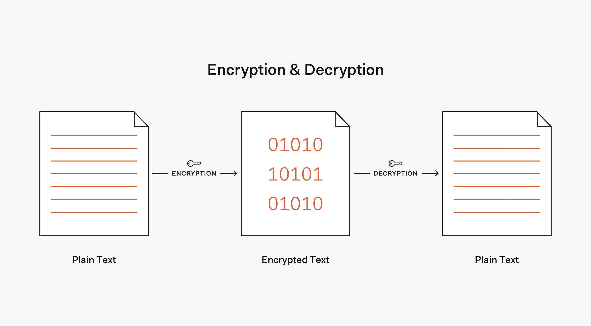
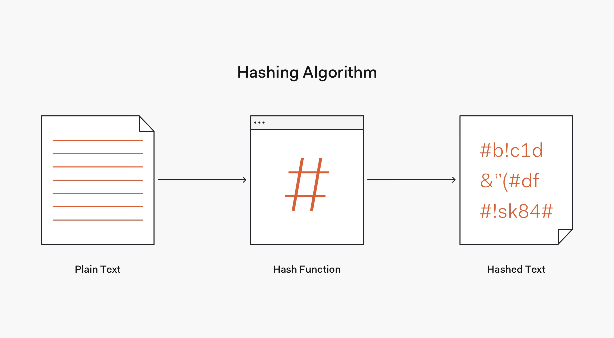
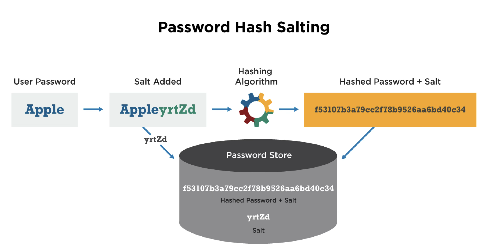

Wachtwoorden#
Wachtwoorden worden, ondanks alle beperkingen daarvan, nog steeds zeer veelvuldig gebruikt om gebruikers te authenticeren. Het is bovendien bekend dat gebruikers, ondanks aansporingen hier tegen, vaak hetzelfde wachtwoord hergebruiken. Het is daarom van belang om wachtwoorden veilig op te slaan zodat zelfs bij een datalek de wachtwoorden van gebruikers niet gelekt worden.
Encryptie en hashing#
Aangezien het plaintext opslaan van wachtwoorden op geen enkele manier als
voldoende veilig kan worden beschouwd zal een vorm van versleuteling moeten
worden toegepast. Hierbij zijn in beginsel twee aanpakken denkbaar. In de
eerste plaats zou een wachtwoord versleuteld kunnen worden opgeslagen,
bijvoorbeeld met de functie
openssl_encrypt.
Om te controleren of het wachtwoord wat de gebruiker bij het inloggen
opgeeft klopt, zou je dan
openssl_decrypt
gebruiken om het plaintext-wachtwoord te achterhalen en te controleren of de
gebruiker het goede wachtwoord heeft opgegeven. Dit is echter geen
acceptabele oplossing; als de broncode van de applicatie lekt, kan iedereen
die de database verkrijgt immers alle wachtwoorden ontsleutelen. In het
algemeen kan dan ook worden gezegd dat je een wachtwoord nooit zo mag
opslaan, dat je de plaintextversie hiervan kan terughalen.

De betere aanpak is door gebruik te maken van hashing. Waar versleuteling, of encryptie, fundamenteel een omkeerbaar proces is, is hashing dat niet. De use case voor encryptie is immers om een bericht te sturen dat alleen door de beoogde ontvanger kan worden gelezen. Om dit mogelijk te maken moet de ontvanger het oorspronkelijke bericht kunnen reconstrueren aan de hand van het versleutelde bericht en een sleutel.
Bij hashing is dit niet zo. Hashing wordt historisch bijvoorbeeld gebruikt om te controleren of een bestand na het downloaden hetzelfde is als het bestand op de server. Hiertoe wordt een hashwaarde berekend voor het gedownloade bestand en vergeleken met een gepubliceerde hash. Als deze twee overeenkomen, dan is het aannemelijk, maar niet gegarandeerd, dat de bestanden ook overeenkomen. Voor deze toepassing is het niet nodig dat de hashfunctie omkeerbaar is; dit zou ook onmogelijk zijn, aangezien de hash veel kleiner is dan het oorspronkelijke bestand, en volgens het duiventilprincipe er dus meerdere bestanden met dezelfde hash moeten zijn.
Hetzelfde principe kan voor wachtwoorden worden toegepast. Als we een hash van een wachtwoord opslaan, kan gecontroleerd worden of een later ingevuld wachtwoord juist is door ook van dat wachtwoord een hash te berekenen en te controleren of deze overeenkomt met de opgeslagen hash. Is dat zo, dan kunnen we aannemen dat het wachtwoord juist was. Omdat de hashfunctie niet omkeerbaar is, is het echter niet mogelijk om het oorspronkelijk ingevulde wachtwoord te achterhalen.

Hashfuncties voor wachtwoorden#
Oorspronkelijk werden voor het hashen van wachtwoorden vaak dezelfde functies gebruikt als voor het hashen van bestanden. Voorbeelden hiervan zijn MD5 en SHA1. Het probleem hiermee is echter dat het voor het controleren van bestanden handig is als een hashfunctie snel te berekenen is; de te controleren bestanden kunnen immers zeer groot zijn en dan is het handig als je snel een hash kan berekenen. Voor het beschermen van wachtwoorden is dit juist niet handig; als je bij een datalek een hash van een wachtwoord verkregen hebt kan je, als de functie maar snel genoeg is, binnen redelijke tijd een brute-forceaanval(https://nl.wikipedia.org/wiki/Brute_force_(methode)) uitvoeren om zo het wachtwoord te achterhalen.
Zo wordt voor het Bitcoin-protocol SHA256 gebruikt, en hebben miners er dus belang bij om heel snel SHA256-hashes te kunnen berekenen. De snelste ASIC-miners hebben een hashrate van meer dan een biljard (10¹⁵) hashes per seconde. Dit is meer dan alle mogelijke wachtwoorden van 8 tekens die uitsluitend uit letters of cijfers bestaan; een dergelijke miner zou zo’n wachtwoord dus binnen een seconde kunnen brute-forcen.
Dit alles betekent dat aan de hashfuncties die gebruikt worden voor wachtwoorden meer eisen gesteld moeten worden. Met name geldt dat deze hashes voldoende langzaam moeten zijn en, idealiter, een zekere hoeveelheid geheugen moeten gebruiken. Voorbeelden hiervan zijn bcrypt, scrypt en Argon2.
Salt en pepper#
Ook als rechtstreeks brute-forcen niet mogelijk is, zou het wel mogelijk kunnen zijn om een tabel te maken met wachtwoorden en hun bijbehorende hashes. Als dan een hash uit een datalek overeenkomt met een rij in deze tabel, is het wachtwoord meteen bekend. Zo’n tabel heet een rainbow table. Om dit te voorkomen, kan aan elk wachtwoord een willekeurige string worden toegevoegd. Dit wordt de salt genoemd. Merk op dat de salt bij de hash moet worden opgeslagen, aangezien deze per hash anders is en nodig is om later het wachtwoord te kunnen controleren.

Naast salt kan ook nog pepper worden gebruikt. Dit is een string die aan elk wachtwoord wordt toegevoegd en voor de hele applicatie gelijk is. Deze pepper wordt niet in de database opgeslagen maar staat alleen in de applicatie, en bovendien niet in versiebeheer. Als dus alleen de database gekraakt wordt is deze waarde nog veilig; ook de applicatieserver waarop de waarde staat moet worden gekraakt om deze waarde te verkrijgen.
Wachtwoorden in PHP#
PHP heeft een drietal functies om wachtwoorden te hashen. De functie
password_hash
genereert een hash van een wachtwoord aan de hand van een specifieke
hashfunctie. De tweede parameter geeft aan welke hashfunctie gebruikt wordt;
als null of PASSWORD_DEFAULT mee wordt gegeven wordt een standaardkeuze
gemaakt, die op het moment van schrijven bcrypt is. Eventueel kan in de
derde parameter meegegeven worden wat de cost van de hashfunctie moet zijn;
een hogere waarde hiervoor leidt tot een langzamere hashfunctie. Normaal
gesproken zal de standaardwaarde, 12, afdoende zijn.
Een hash die met password_hash gegenereerd is bevat naast de feitelijke
hashwaarde ook informatie over de totstandkoming van de hash; zo begint een
bcrypt-hash met $2y$ en bevat deze ook de cost en salt. Dit betekent dat
al deze informatie niet apart hoeft te worden opgeslagen. De functie
password_verify
kan gebruikt worden om te controleren of de hash overeenkomt met een bepaald
plaintext-wachtwoord.
In principe is het mogelijk dat een hashfunctie gekraakt wordt of anderszins
verouderd is. Aangezien de plaintext-wachtwoorden niet beschikbaar zijn, kan
dit probleem niet meteen verholpen worden. Wat wel kan, is op het moment dat
een gebruiker inlogt controleren of diens wachtwoordhash nog voldoet aan de
huidige eisen. Hiervoor kan de functie
password_needs_rehash
worden gebruikt. Deze functie controleert of de hash gemaakt is met het
algoritme en de opties die aan password_needs_rehash zijn meegegeven. Als
dat niet zo is, kan op dat moment het wachtwoord opnieuw gehasht en
opgeslagen worden.